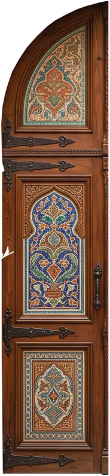
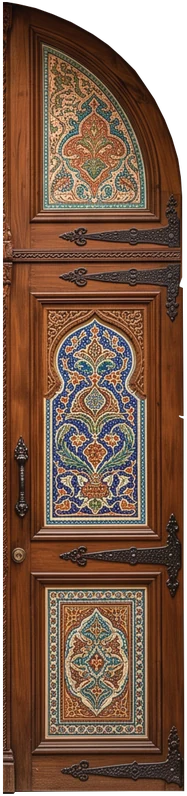
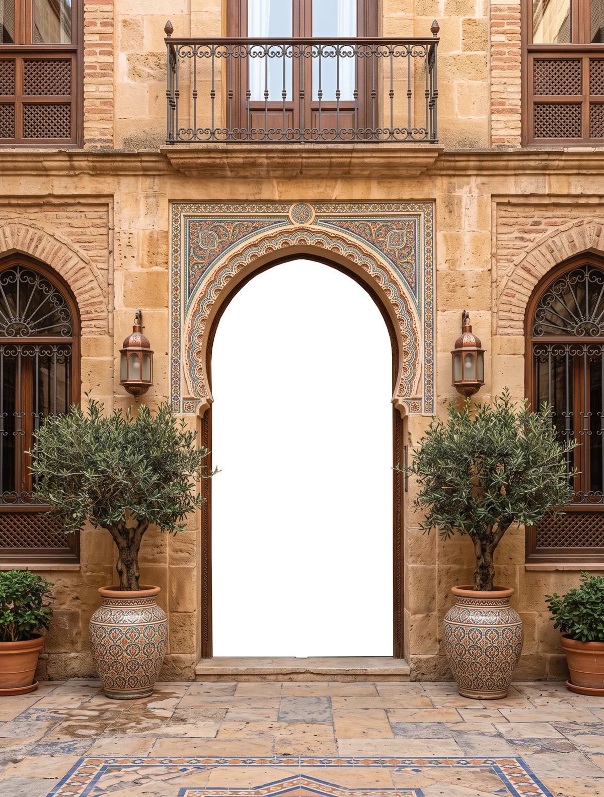

A experiência levantina da Madeira — Sabores do Líbano e do Mediterrâneo no Funchal



Do húmus cremoso ao falafel estaladiço, do tabbouleh fresco à baklava dourada — receitas autênticas do Líbano e do Mediterrâneo Oriental, com ingredientes frescos e a hospitalidade de quem recebe em casa.
Grão-de-bico, tahine, azeite e limão.
Estaladiço por fora, macio por dentro.
Uma mesa de pequenos pratos para partilhar.
Pão fino, recheios frescos, sabor a Beirute.
“A única experiência levantina da Madeira — os sabores são de outro nível.”
“Húmus e falafel autênticos, ambiente lindíssimo. Recomendo muito!”
“Uma viagem ao Líbano sem sair do Funchal. Voltaremos de certeza.”
Uma viagem ao Líbano, no coração do Funchal.
Em Zaytun · escolha dia, hora e deixe o seu contacto.